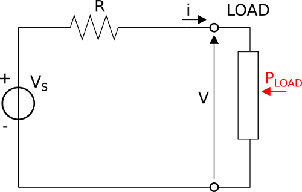
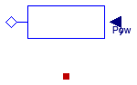

Package with models for DC electrical loads
This package contains models that represent different types of DC loads.
Extends from Modelica.Icons.VariantsPackage (Icon for package containing variants).
| Name | Description |
|---|---|
| Conductor | Model of a generic DC load |
| Resistor | Ideal linear electrical resistor |
| Examples | Package with example models |
 Buildings.Electrical.DC.Loads.Conductor
Buildings.Electrical.DC.Loads.Conductor
Model of a generic DC load

Model of a generic DC load. The load can be either constant or variable depending on the value of the
parameter mode.
See the model Buildings.Electrical.Interfaces.Load
for more information.
The model computes the current drawn from the load as
P = V i,
where P is the power, V is the voltage and i is the current.
If the component consumes power, then P < 0.
If it feeds power into the electrical grid, then P > 0.
Consider the simple DC circuit shown in the figure below

where VS is a constant voltage source, and R is the line resistance. The load has a voltage V across its electrical pins and a current i is flowing through it. If the power consumption drawn by the load is prescribed by the variable PLOAD, the equation that describes the circuit is
VS - R i - PLOAD/i = 0
The unknown variable i appears in a nonlinear equation. This means that in order to compute the current that is drawn by the load, a nonlinear equation has to be solved. If the number of loads increases (as typically happens in real case examples) the number of nonlinear equations to be solved increases too, and the resulting system of nonlinear equations can slow down the simulation. It is possible to avoid such a problem by introducing a linearized model.
The first step to linearize the load model is to define its nominal voltage conditions Vnom,
around which the equations will be linearized.
The constitutive equation of the load can be linearized around the nominal voltage condition Vnom as
i = PLOAD/V = PLOAD/Vnom + (V - Vnom)[∂ (PLOAD/V)/ ∂V ]V = Vnom + ₒ((V - Vnom)2),
which leads to the linearized formulation
i ≃ PLOAD (2/Vnom - V/Vnom2).
The linearized formulation approximates the load power consumption (or production), with the approximation error being proportional to (V - Vnom)2. A further approximation has been introduced to improve the approximation of the linearized model even if the voltage is far from the nominal condition. This piecewise linearized approximation instead of approximating the model just in the neighborhood of the nominal voltage Vnom introduces two new points where the model is approximated. The points are at 0.8 Vnom and 1.2 Vnom.
| Equation | Condition |
|---|---|
| i ≃ PLOAD (2/(0.8 Vnom) - V/(0.8 Vnom2)) | V < 8/9⋅ Vnom |
| i ≃ PLOAD (2/(1.2 Vnom) - V/(1.2 Vnom2)) | V ≥ 12/11⋅ Vnom |
| i ≃ PLOAD (2/Vnom - V/Vnom2) | Otherwise |
Extends from Buildings.Electrical.Interfaces.Load (Partial model for a generic load).
| Type | Name | Default | Description |
|---|---|---|---|
| replaceable package PhaseSystem | PartialPhaseSystem | Phase system | |
| Modelling assumption | |||
| Boolean | linearized | false | If true, the load model is linearized |
| Load | mode | Buildings.Electrical.Types.L... | Type of load model (e.g., steady state, dynamic, prescribed power consumption, etc.) |
| Nominal conditions | |||
| Power | P_nominal | Nominal power (negative if consumed, positive if generated) [W] | |
| Voltage | V_nominal | Nominal voltage (V_nominal >= 0) [V] | |
| Initialization | |||
| InitMode | initMode | Buildings.Electrical.Types.I... | Initialization mode for homotopy operator |
| Type | Name | Description |
|---|---|---|
| replaceable package PhaseSystem | Phase system | |
| input RealInput | y | Fraction of the nominal power consumed [1] |
| input RealInput | Pow | Power consumed [W] |
 Buildings.Electrical.DC.Loads.Resistor
Buildings.Electrical.DC.Loads.Resistor
Ideal linear electrical resistor

Model of a linear DC resistor that can vary with respect to temperature.
The model implements the Ohm's law
V = R(T) i.
The resistance R(T) varies depending on the temperature T as
R(T) = R (1 + α (T - Tref),
where the resistance R is the reference value of the resistance, α is the
linear temperature coefficient, and Tref is the reference temperature.
The temperature T is the temperature of the heat port if useHeatPort = true.
Extends from Buildings.Electrical.Interfaces.Load (Partial model for a generic load), Modelica.Electrical.Analog.Interfaces.ConditionalHeatPort (Partial model to include a conditional HeatPort in order to describe the power loss via a thermal network).
| Type | Name | Default | Description |
|---|---|---|---|
| replaceable package PhaseSystem | PartialPhaseSystem | Phase system | |
| Boolean | useHeatPort | false | =true, if HeatPort is enabled |
| Temperature | T | T_ref | Fixed device temperature if useHeatPort = false [K] |
| Resistance | R | Resistance at temperature T_ref [Ohm] | |
| Temperature | T_ref | 300.15 | Reference temperature [K] |
| LinearTemperatureCoefficient | alpha | 0 | Temperature coefficient of resistance (R_actual = R*(1 + alpha*(T_heatPort - T_ref)) [1/K] |
| Modelling assumption | |||
| Boolean | linearized | false | If true, the load model is linearized |
| Load | mode | Buildings.Electrical.Types.L... | Type of load model (e.g., steady state, dynamic, prescribed power consumption, etc.) |
| Nominal conditions | |||
| Power | P_nominal | 0 | Nominal power (negative if consumed, positive if generated) [W] |
| Voltage | V_nominal | Nominal voltage (V_nominal >= 0) [V] | |
| Initialization | |||
| InitMode | initMode | Buildings.Electrical.Types.I... | Initialization mode for homotopy operator |
| Type | Name | Description |
|---|---|---|
| replaceable package PhaseSystem | Phase system | |
| input RealInput | y | Fraction of the nominal power consumed [1] |
| input RealInput | Pow | Power consumed [W] |
| HeatPort_a | heatPort | |